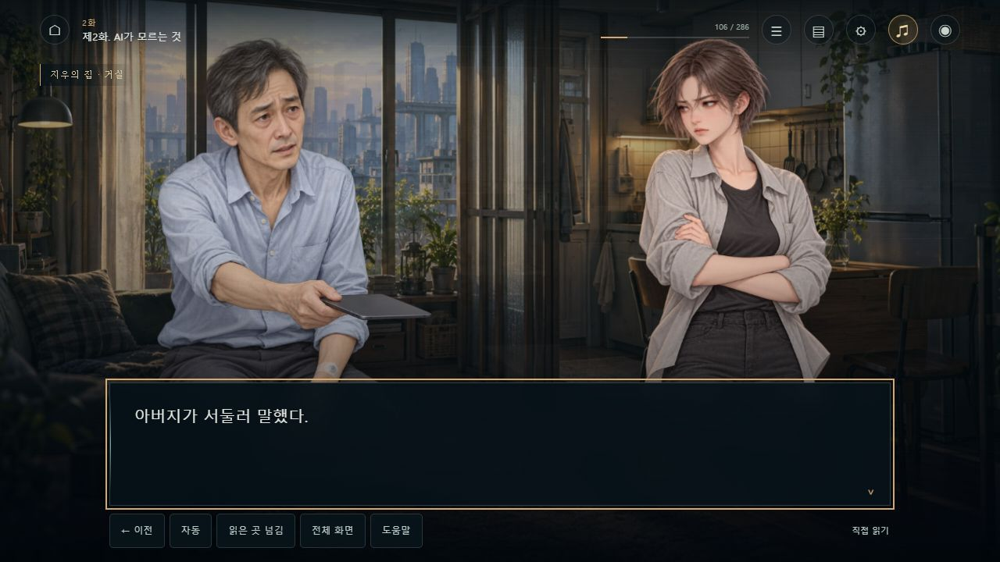
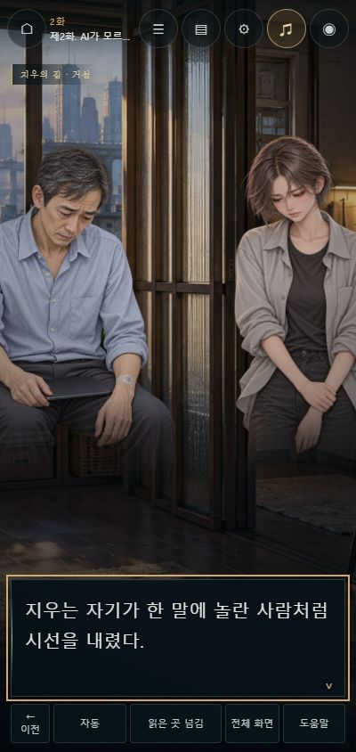
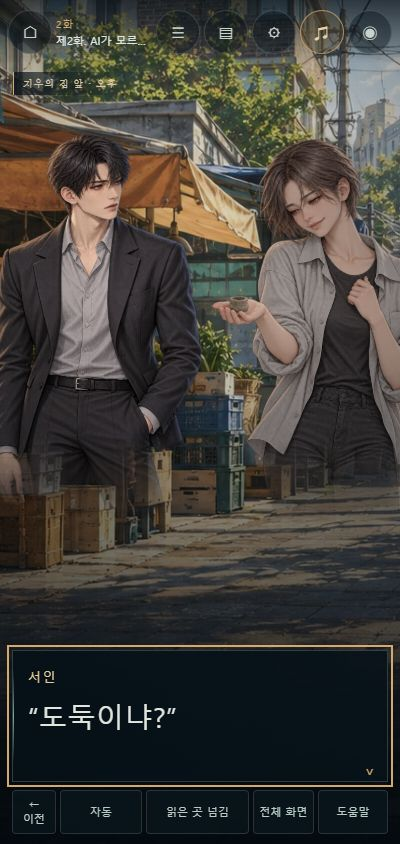
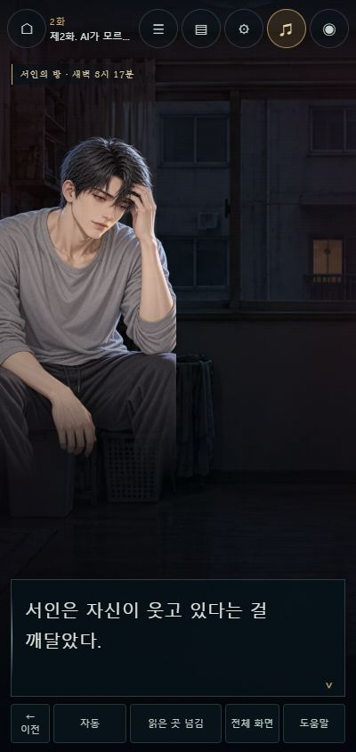
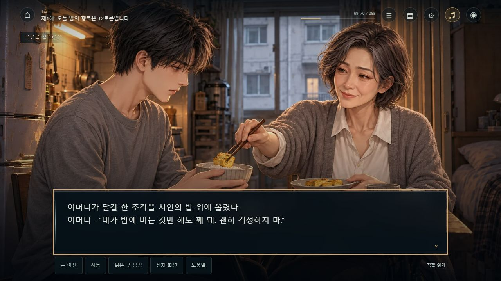
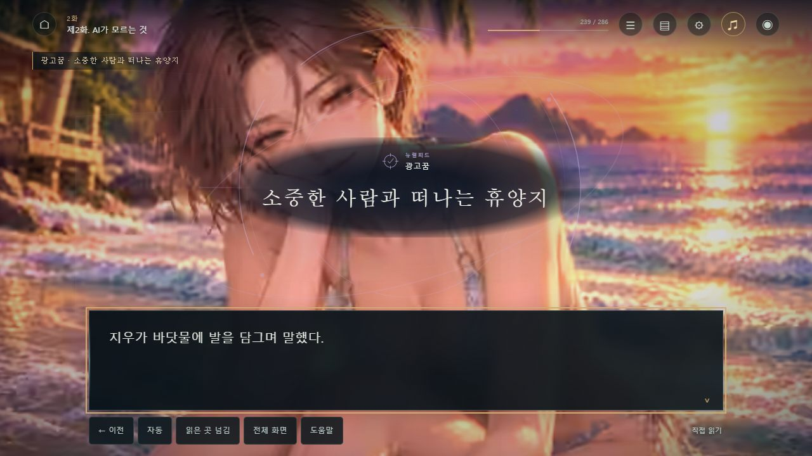
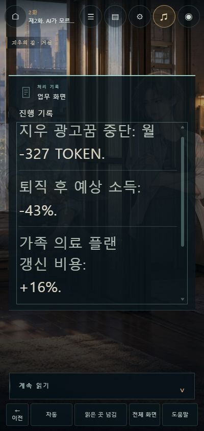
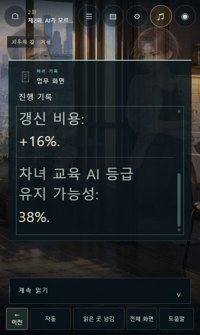
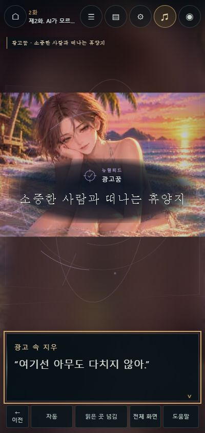

EPISODES 01–02 · 2026.10.19 · EP12 R3
같은 얼굴에도
다른 순간이 보이도록.
1~2화의 원문과 저장 위치를 유지하면서, 상황에 맞는 손·자세·시선과 음향을 보강했습니다. 최신 원격 작업의 여성 지우, 좁은 집, 읽기 화면 묶음, 모바일 가계 문서, 해변 최종 CG를 함께 보존했습니다.
인물이 대사의 상황에 맞게 반응합니다
어머니는 검진비를 이야기하며 젓가락을 든 웃음 대신 손을 모으고 시선을 내립니다. 지우의 아버지는 투약 포트가 보이는 팔로 태블릿을 내밀었다가, 마지막에는 화면을 무릎에 내려놓고 고개를 숙입니다. 지우의 팔짱·내린 시선·점토를 든 손·주머니에 손을 넣은 웃음을 구분했습니다.




서인은 집의 회색 홈웨어, 통근과 외출의 서 있는 자세, 밤에 기대 누운 모습, 악몽 직후 가슴에 손을 댄 모습으로 나눴습니다. 기존 식탁·밤 CG의 좁은 방과 구도는 살리고 옷만 맞춘 변형을 사용합니다. 기존 그림 파일은 그대로 보관합니다.

작업 중 올라온 최종 해변 CG도 보존했습니다
원격 main이 1b560a6에서 a3fa28b로 바뀐 것을 반영 직전에 확인했습니다. 새 해변 CG와 AVIF 내장 지원, 오프라인 자동 생성 배포 절차를 통합했습니다. 해변 CG 자체에 지우가 있으므로 추가 지우 원화를 겹치지 않습니다. 꿈의 시작부터 중도 종료 직전까지 해당 CG를 사용하고, 각성할 때 해제합니다.

투명한 꿈속 지우 원화도 제작했지만 최종 해변 CG와 중복되므로 현재 플레이에는 넣지 않았습니다. 원화 기록에는 예비 에셋으로 표시했습니다. 제작 원화는 인물 13종이며 실제 사용은 12종입니다.
소리가 끊기는 순간도 장면에 맞춥니다
자체 작곡 3곡을 이어 쓰고, 거리의 공기·밤 방의 소리·심박·메시지·태블릿 소리 5종을 새로 합성했습니다. 광고꿈의 평온한 선율은 의심이 생길 때 바뀌고, 모노를 불러도 대답이 없을 때는 전환 중 잔향까지 즉시 끊습니다. 각성 뒤에는 짧게 심박이 이어지고, 마지막 세 메시지에는 별도 음악을 깔지 않습니다. 장소 표시는 3시 17분에서 3시 24분으로 정확히 바뀝니다.
미세한 호흡과 발화·청취 강조를 넣되, 고백과 침묵에서는 동작을 멈춥니다. ‘움직임 줄이기’를 켜면 새 동작과 교차 전환도 멈춥니다. 음향 비용이나 외부 음원 크레딧은 사용하지 않았습니다.
휴대폰에서 실제로 눌러 확인했습니다



| 확인 항목 | 실행 결과 |
|---|---|
| 순차 플레이 | PC 1280×720과 휴대폰 400×844에서 1화 263개·2화 286개 원문을 읽기 화면 순서대로 전부 조작했습니다. 누락·가로 넘침 0. 원격 통합 뒤 2화 전구간을 두 크기에서 다시 확인했습니다. |
| 읽기·저장 | 이전 이동, 지난 대사, 수동 저장 후 같은 문장 복귀, 자동 진행 중 설정을 열었을 때 정지, 화면 숨김과 복귀, 읽지 않은 곳에서 넘김 정지를 확인했습니다. 기존 원문 인덱스를 유지하고, 긴 설명 사이 연결 문장만 묶었습니다. |
| 문서·진입 | 28px 글자에서 가계 네 수치를 유지하고 마지막 38%까지 스크롤했습니다. 작은 400×667 화면에서도 진행 버튼을 눌렀습니다. 티저 재생·일시정지·건너뛰기, 1→2→3화 이동을 확인했습니다. |
| 음향·오류 | 브라우저의 실제 디코딩·재생 상태, 정지와 전환, 무음 종막을 확인했습니다. 지연 로딩 취소와 장 경계 효과음 검사도 포함해 72개 통과. 플레이 중 브라우저 경고·오류 0. |
| 단일 HTML | 최신 원격 원고와 AVIF·음향까지 내장해 약51.4MB로 생성했습니다. 로컬 HTTP로 실행하고 외부 스크립트·스타일시트 0, 내장 CG·음향 재생을 확인했습니다. 배포 절차도 매번 최신 오프라인판을 생성합니다. |
| 보존 범위 | 이번 변경과 최신 origin/main 사이에 원고·설정·집필 기록 차이는 없습니다. 안티그래비티 모바일 문서·20-1화 배치 CSS도 유지합니다. 원격에서 들어온 21~24화 작업을 되돌리거나 재작성하지 않았습니다. |
문장 즉시 표시와 검증용 순차 조작입니다. 일반 독자의 20~30분 감상 시간, 사람의 이어폰·스피커 청취 평가, iOS·Safari 기기 검수나 상업적 완성도 인증을 한 결과는 아닙니다. 인물은 장면별 원화와 미세 동작 방식이며 얼굴 리깅이나 성우 녹음은 포함하지 않습니다.